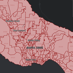

Each election the Santa Cruz County Elections Department must consolidate regular precincts into a smaller number of voting precincts. For each election every person who registers to vote is assigned a regular precinct within the county based on the address they enter on their voter registration form.
Each election has several different ballot types based on the different jurisdictions that are up for an election. In order to reduce the number of different ballot types, if two or more adjacent regular precincts share all the same items on the ballot, then they are consolidated into a single voting precinct. These voting precincts are then used for tabulation and reporting.
A layer with 720 regular precincts was provided together with a cross-reference table listing the 138 voting precincts that need to be created each with a corresponding list of their constituent regular precincts. Using Python and the arcpy api, this data was wrangled into a format where it can easily be joined to the regular precincts layer and the regular precinct features were dissolved to create 297 new voting precincts.
Regular Precincts
Map of the original 720 regular precincts.
{kind=link}
Voting Precincts
Consolidated voting precincts created by the procedure shown in ArcGIS Pro.
{kind=link}
Map of the 297 new consolidated voting precincts generated by the procedure.
{kind=link}
Python Code
# ----------------------------------------------------------------------
# santa_cruz_precincts.py
# Christopher Prendergast
# 2024/05/15
# ----------------------------------------------------------------------
#
import arcpy
import sys
from typing import List
from pathlib import Path
global g_proj_dir
global g_in_gdb
global g_temp_gdb
global g_out_gdb
def full_path(root_dir: str, basename: str) -> str:
"""
Convert basename to a full path given the root directory or
geo-database path.
:param str root_dir: The root directory or file geo-database
path.
:param str basename: The basename of a geo-database or feature
class.
:return str: The root and basename joined as a path.
"""
return str(Path(root_dir, basename))
def setup_env(proj_dir_str: str, in_gdb_str: str, temp_gdb_str: str,
out_gdb_str: str) -> None:
"""
Set up the geo-database environment. Assign values to global
variables g_in_gdb and g_out_gdb.
:param str proj_dir_str: The project directory.
:param str in_gdb_str: The basename of the input geo-database
within the project directory.
:param str temp_gdb_str: The full path of the temporary
geo-database.
:param str out_gdb_str: The basename of the output geo-database
within the project directory.
:return NoneType: None
"""
#
# Allow overwriting outputs.
# Note: overwriting doesn't work if the layer is open in ArcGIS Pro
# due to lock. Closing ArgGIS Pro releases the lock and the outputs
# can be overwritten. See:
# https://community.esri.com/t5/python-questions/arcpy-env-overwriteoutput-true-fails/m-p/411113#M32410
#
arcpy.env.overwriteOutput = True
#
# Check the project directory exists.
#
global g_proj_dir
g_proj_dir = str(Path(proj_dir_str))
assert Path(g_proj_dir).is_dir(), \
f"Can't find the project directory {g_proj_dir}"
print("...project directory:", g_proj_dir)
#
# Assign global variables for the input and output geo-databases.
#
global g_in_gdb
g_in_gdb = full_path(proj_dir_str, in_gdb_str)
global g_temp_gdb
g_temp_gdb = temp_gdb_str
global g_out_gdb
g_out_gdb = full_path(proj_dir_str, out_gdb_str)
#
# Check the input and output geo-databases exist.
#
assert arcpy.Exists(g_in_gdb), \
f"Can't find input geo-database: {g_in_gdb}"
assert arcpy.Exists(g_temp_gdb), \
f"Can't find temporary geo-database: {g_temp_gdb}"
assert arcpy.Exists(g_out_gdb), \
f"Can't find output geo-database: {g_out_gdb}"
print("...input geo-database:", g_in_gdb)
print("...temporary geo-database:", g_temp_gdb)
print("...output geo_database:", g_out_gdb)
def load_shapefile(shape_file: str, out_gdb: str) -> str:
"""
Load a shapefile into feature class with the same name in the
specified geodatabase.
:param str shape_file: The file path to the shapefile.
:param str out_gdb: The path to the geo-database.
:return str: The geo-database path to the feature class
created.
"""
print("...load_shapefile, shape_file", shape_file)
print("...load_shapefile, out_gdb:", out_gdb)
assert arcpy.Exists(shape_file), \
f"Can't find input shape_file: {shape_file}"
assert arcpy.Exists(out_gdb), \
f"Can't find input out_gdb: {out_gdb}"
try:
result: arcpy.Result = (
arcpy.conversion.FeatureClassToGeodatabase(
Input_Features=[shape_file],
Output_Geodatabase=out_gdb
))
except arcpy.ExecuteError:
#
# Handle geo-processing specific errors.
#
print("...load_shapefile, arcpy error executing "
"geo-processing tool.")
print(arcpy.GetMessages(2))
sys.exit(101)
except Exception:
#
# Handle any other type of error.
#
e = sys.exc_info()[1]
print(e.args[0])
sys.exit(201)
print(result.getMessages())
#
# Unpack first element of result object as return value.
#
ret_val = result.getOutput(0)
#
# This tool ony returns the path to the gdb not the feature class.
# So, construct path to feature class here.
#
ret_val = full_path(ret_val, str(Path(shape_file).stem))
print("...load_shapefile,", arcpy.management.GetCount(ret_val),
"precincts loaded from shapefile.")
print("...load_shapefile, ret_val:", ret_val)
assert arcpy.Exists(ret_val), f"Can't find feature class: {ret_val}"
return ret_val
def load_table(dbf_file: str, out_gdb: str):
"""
Load a dbf file into a table with the same name in the specified
geo-database.
:param str dbf_file: The file path to the dbf file.
:param str out_gdb: The path to the geo-database.
:return str: The geo-database path to the table created.
"""
print("...load_table, dbf_file", dbf_file)
print("...load_table, out_gdb:", out_gdb)
assert arcpy.Exists(dbf_file), \
f"Can't find input dbf_file: {dbf_file}"
assert arcpy.Exists(out_gdb), f"Can't find input out_gdb: {out_gdb}"
try:
result: arcpy.Result = arcpy.conversion.TableToGeodatabase(
Input_Table=[dbf_file],
Output_Geodatabase=out_gdb)
except arcpy.ExecuteError:
#
# Handle geo-processing specific errors.
#
print("...load_table, arcpy error executing "
"geo-processing tool.")
print(arcpy.GetMessages(2))
sys.exit(102)
except Exception:
#
# Handle any other type of error.
#
e = sys.exc_info()[1]
print(e.args[0])
sys.exit(202)
print(result.getMessages())
#
# Unpack first element of result object as return value.
#
ret_val = result.getOutput(0)
#
# This tool ony returns the path to the gdb not the feature class.
# So, construct path to feature class here.
#
ret_val = full_path(ret_val, str(Path(dbf_file).stem))
print("...load_table,", arcpy.management.GetCount(ret_val),
"cross_reference records loaded from dbf file.")
print("...load_table, ret_val:", ret_val)
assert arcpy.Exists(ret_val), f"Can't find feature class: {ret_val}"
return ret_val
def create_table(out_path: str, out_name: str) -> str:
"""
Create a new empty table in the specified geo-database.
:param str out_path: The path to the geo-database
:param str out_name: The name of the table to create.
:return str: The geo-database path to the table created.
"""
print("...create_table, out_path", out_path)
print("...create_table, out_name:", out_name)
assert arcpy.Exists(out_path), \
f"Can't find input out_path: {out_path}"
try:
result: arcpy.Result = arcpy.management.CreateTable(
out_path=out_path,
out_name=out_name
)
except arcpy.ExecuteError:
#
# Handle geo-processing specific errors.
#
print("...create_table, arcpy error executing "
"geo-processing tool.")
print(arcpy.GetMessages(2))
sys.exit(103)
except Exception:
#
# Handle any other type of error.
#
e = sys.exc_info()[1]
print(e.args[0])
sys.exit(203)
print(result.getMessages())
#
# Unpack first element of result object as return value.
#
ret_val = result.getOutput(0)
print("...create_table, ret_val:", ret_val)
assert arcpy.Exists(ret_val), f"Can't find feature class: {ret_val}"
return ret_val
def add_fields(in_table: str,
field_description: List[List[str]]) -> str:
"""
Add fields to a table in the geo-database.
:param str in_table: The geo-database path to the table.
:param str field_description: Specification of fields to add.
:return str: The geo-database path to the table.
"""
print("...add_fields, in_table", in_table)
print("...add_fields, field_description:", field_description)
assert arcpy.Exists(in_table), \
f"Can't find input in_table: {in_table}"
try:
result: arcpy.Result = arcpy.management.AddFields(
in_table=in_table,
field_description=field_description)
except arcpy.ExecuteError:
#
# Handle geo-processing specific errors.
#
print("...add_fields, arcpy error executing "
"geo-processing tool.")
print(arcpy.GetMessages(2))
sys.exit(104)
except Exception:
#
# Handle any other type of error.
#
e = sys.exc_info()[1]
print(e.args[0])
sys.exit(204)
print(result.getMessages())
#
# Unpack first element of result object as return value.
#
ret_val = result.getOutput(0)
print("...add_fields, ret_val:", ret_val)
assert arcpy.Exists(ret_val), f"Can't find feature class: {ret_val}"
return ret_val
def join_by_field(in_data: str, in_field: str, join_table: str,
join_field: str, fields: List[str],
index_join_fields="NEW_INDEXES") -> str:
"""
Join two feature classes/tables based on a common key and transfer
the specified fields to one of the tables.
:param str in_data: The geo-database path to the 1st table.
:param str in_field: The join field in the 1st table.
:param str join_table: The geo-database path to the 2nd table.
:param str str join_field: The join field in the 2nd table.
:param list fields: The list of fields to transfer.
:param str index_join_fields: Whether to create new indexes.
:return str: The geo-database path to the resulting
table.
"""
print("...join_field, in_data", in_data)
print("...join_field, in_field:", in_field)
print("...join_field, join_table:", join_table)
print("...join_field, fields:", fields)
print("...join_field, index_join_fields:", index_join_fields)
assert arcpy.Exists(in_data), f"Can't find input in_data: {in_data}"
assert arcpy.Exists(join_table), \
f"Can't find input in_table: {join_table}"
try:
result: arcpy.Result = arcpy.management.JoinField(
in_data=in_data,
in_field=in_field,
join_table=join_table,
join_field=join_field,
fields=fields,
index_join_fields=index_join_fields
)
except arcpy.ExecuteError:
#
# Handle geo-processing specific errors.
#
print("...join_by_field, arcpy error executing "
"geo-processing tool.")
print(arcpy.GetMessages(2))
sys.exit(105)
except Exception:
#
# Handle any other type of error.
#
e = sys.exc_info()[1]
print(e.args[0])
sys.exit(205)
print(result.getMessages())
#
# Unpack first element of result object as return value.
#
ret_val = result.getOutput(0)
print("...join_field,", arcpy.management.GetCount(ret_val),
"records after join.")
print("...join_field, ret_val:", ret_val)
assert arcpy.Exists(ret_val), f"Can't find feature class: {ret_val}"
return ret_val
def dissolve(in_features: str, out_feature_class: str,
dissolve_field: str) -> str:
"""
Dissolve the polygons in a feature class based on a shared value in
:a field.
:param str in_features: The path to the input feature class.
:param str out_feature_class: The path to the output feature class.
:param str dissolve_field: The field to dissolve on.
:return str: The path to the output feature class.
"""
print("...dissolve, in_features", in_features)
print("...dissolve, out_feature_class:", out_feature_class)
print("...dissolve, dissolve_field:", dissolve_field)
assert arcpy.Exists(in_features), \
f"Can't find input in_features: {in_features}"
try:
result: arcpy.Result = arcpy.analysis.PairwiseDissolve(
in_features=in_features,
out_feature_class=out_feature_class,
dissolve_field=[dissolve_field]
)
except arcpy.ExecuteError:
#
# Handle geo-processing specific errors.
#
print("...dissolve, arcpy error executing "
"geo-processing tool.")
print(arcpy.GetMessages(2))
sys.exit(106)
except Exception:
#
# Handle any other type of error.
#
e = sys.exc_info()[1]
print(e.args[0])
sys.exit(206)
print(result.getMessages())
#
# Unpack first element of result object as return value.
#
ret_val = result.getOutput(0)
print("...dissolve,", arcpy.management.GetCount(ret_val),
"records after dissolve.")
print("...dissolve, ret_val:", ret_val)
assert arcpy.Exists(ret_val), f"Can't find feature class: {ret_val}"
return ret_val
def explode_xref(xref_table: str, xref_explode_table: str) -> str:
"""
Explode any regular precincts for each voting precinct in
the cross-reference table into multiple separate rows in a new
table. Note that the key and value in the exploded results table is
swapped from the input cross-reference table. The key in the output
table is the regular precinct and there can be only one voting
precinct for each regular precinct in the output. Each voting
precinct can appear in multiple rows in the output.
:param str xref_table: The path to the cross-reference table.
:param str xref_explode_table: The path to the exploded table.
:return str: The path to the exploded table.
"""
print("...explode_xref, xref_table", xref_table)
print("...explode_xref, xref_explode_table:", xref_explode_table)
assert arcpy.Exists(xref_table), \
f"Can't find input xref_table: {xref_table}"
assert arcpy.Exists(xref_explode_table), \
f"Can't find input xref_explode_table: {xref_explode_table}"
#
# Iterate over the cross-reference table and unpack multiple regular
# precincts dictionary entries. The dictionary key is the regular
# precinct and the value is the associated voting precinct.
#
precincts_1to1 = {}
try:
with (arcpy.da.SearchCursor(
xref_table, ["VotePrec", "_Precincts"]) as search_cur):
for voting_precinct, regular_precincts_str in search_cur:
#
# Unpack the regular precincts into individual items and
# add voting precinct to a dictionary with regular
# precinct as the key. Note: using a set here just in
# case there are any duplicate regular precincts in the
# same cross-reference row.
#
regular_precincts_set = \
set(regular_precincts_str.split())
for regular_precinct in regular_precincts_set:
precincts_1to1[regular_precinct] = \
voting_precinct
except arcpy.ExecuteError:
#
# Handle geo-processing specific errors.
#
print("...explode_xref, arcpy error executing "
"geo-processing tool.")
print("...explode_xref, error in SearchCursor")
print(arcpy.GetMessages(2))
sys.exit(107)
except Exception:
#
# Handle any other type of error.
#
e = sys.exc_info()[1]
print(e.args[0])
sys.exit(207)
#
# Insert the contents of the dictionary into a table so that we can
# use geo-processing tools to join to this table.
#
try:
with (
arcpy.da.InsertCursor(
xref_explode_table,
["Precinct", "VotePrec"]) as insert_cur):
for regular_precinct, voting_precinct \
in precincts_1to1.items():
insert_cur.insertRow(
[regular_precinct,
precincts_1to1[voting_precinct]
]
)
except arcpy.ExecuteError:
#
# Handle geo-processing specific errors.
#
print("...explode_xref, arcpy error executing "
"geo-processing tool.")
print("...explode_xref, error in InsertCursor")
print(arcpy.GetMessages(2))
sys.exit(108)
except Exception:
#
# Handle any other type of error.
#
e = sys.exc_info()[1]
print(e.args[0])
sys.exit(208)
ret_val = xref_explode_table
print("...explode_xref, ret_val:", ret_val)
print("...explode_xref,", arcpy.management.GetCount(ret_val),
"regular precincts have a voting precinct assigned.")
assert arcpy.Exists(ret_val), f"Can't find feature class: {ret_val}"
return ret_val
def update_precincts(precincts_fc: str) -> str:
"""
Update the precincts feature class so that regular precincts that
don't appear in the cross-reference table have their voting precinct
set to the same value as their regular precinct. This is necessary
to avoid all these precincts being dissolved into a single polygon
because the share the same null value for voting precinct.
:param str precincts_fc: The path to the precincts feature class.
:return str: The path to the precincts feature class.
"""
print("...update_precincts, precincts_fc", precincts_fc)
assert arcpy.Exists(precincts_fc), \
f"Can't find input precincts_fc: {precincts_fc}"
try:
with arcpy.da.UpdateCursor(
precincts_fc, ["Precinct", "VotePrec"],
where_clause='"VotePrec" is null') as update_cur:
update_count = 0
for row in update_cur:
precinct, voting_precinct = row
if voting_precinct is None:
row[1] = precinct
update_cur.updateRow(row)
update_count += 1
print("...update_precincts,", update_count, "rows updated.")
except arcpy.ExecuteError:
#
# Handle geo-processing specific errors.
#
print("...update_precincts, arcpy error executing "
"geo-processing tool.")
print("...update_precincts, error in UpdateCursor")
print(arcpy.GetMessages(2))
sys.exit(109)
except Exception:
#
# Handle any other type of error.
#
e = sys.exc_info()[1]
print(e.args[0])
sys.exit(209)
ret_val = precincts_fc
print("...update_precincts, ret_val:", ret_val)
print(
"...update_precincts,",
arcpy.management.GetCount(ret_val),
"regular precincts with a voting precinct assigned after update."
)
assert arcpy.Exists(ret_val), f"Can't find feature class: {ret_val}"
return ret_val
def run_tools() -> None:
"""
Run the geo-processing tools to buffer and join the various feature
classes.
:return NoneType: None
"""
#
# Load precincts from shapefile.
#
precincts_shp_file = str(
Path(
g_proj_dir,
"Precincts",
"Precincts.shp"
)
)
precincts = load_shapefile(precincts_shp_file, g_temp_gdb)
#
# Load cross-reference table from dbf file.
#
xref_dbf_file = str(
Path(
g_proj_dir,
"Precincts",
"Precinct_Cross_Reference.dbf"
)
)
xref = load_table(xref_dbf_file, g_temp_gdb)
#
# Create a table to hold exploded cross-references.
#
xref_explode = create_table(g_temp_gdb, "xref_explode")
fields_to_add = [
["Precinct", "TEXT", "", "255", "", ""],
["VotePrec", "TEXT", "", "255", "", ""]
]
xref_explode = add_fields(xref_explode, fields_to_add)
#
# Explode the cross-references.
#
xref_explode = explode_xref(xref, xref_explode)
#
# Join the exploded cross-references to the precincts.
#
precincts = join_by_field(
precincts, "Precinct", xref_explode, "Precinct",
["VotePrec"])
#
# Update precincts with no voting precinct.
#
update_precincts(precincts)
#
# Dissolve the precincts to get the voting precincts.
#
voting_precincts = full_path(g_out_gdb, "voting_precincts")
voting_precincts = dissolve(
precincts, voting_precincts, "VotePrec")
print(arcpy.management.GetCount(voting_precincts),
"voting precincts created.")
print(voting_precincts)
if __name__ == '__main__':
#
# Define locations of geodatabases.
#
my_proj_dir = r"C:\ArcGIS_local_projects\CodeChallenge3"
my_in_gdb = "CodeChallenge3.gdb"
#
# Intermediate results are written to the temporary geo-database.
# To speed processing and avoid writing intermediate results to
# disk this is set to "memory".
# If you need to keep these results, change this to the full path of
# a file geodatabase as follows:
# my_temp_gdb = full_path(my_proj_dir, "CodeChallenge3.gdb")
#
my_temp_gdb = "memory"
my_out_gdb = "CodeChallenge3.gdb"
setup_env(my_proj_dir, my_in_gdb, my_temp_gdb, my_out_gdb)
#
# Run the main process.
#
run_tools()
# ----------------------------------------------------------------------
# Sample Output
# ----------------------------------------------------------------------
# "C:\Program Files\ArcGIS\Pro\bin\Python\envs\arcgispro-py3\python.exe" C:\PythonPro\Ex11\challenge3_v1.py
# ...project directory: C:\ArcGIS_local_projects\CodeChallenge3
# ...input geo-database: C:\ArcGIS_local_projects\CodeChallenge3\CodeChallenge3.gdb
# ...temporary geo-database: memory
# ...output geo_database: C:\ArcGIS_local_projects\CodeChallenge3\CodeChallenge3.gdb
# ...load_shapefile, shape_file C:\ArcGIS_local_projects\CodeChallenge3\Precincts\Precincts.shp
# ...load_shapefile, out_gdb: memory
# C:\ArcGIS_local_projects\CodeChallenge3\Precincts\Precincts.shp Successfully converted: memory\Precincts
# Start Time: Wednesday, May 15, 2024 4:15:29 PM
# C:\ArcGIS_local_projects\CodeChallenge3\Precincts\Precincts.shp Successfully converted: memory\Precincts
# Succeeded at Wednesday, May 15, 2024 4:15:31 PM (Elapsed Time: 1.22 seconds)
# ...load_shapefile, 720 precincts loaded from shapefile.
# ...load_shapefile, ret_val: memory\Precincts
# ...load_table, dbf_file C:\ArcGIS_local_projects\CodeChallenge3\Precincts\Precinct_Cross_Reference.dbf
# ...load_table, out_gdb: memory
# Converted C:\ArcGIS_local_projects\CodeChallenge3\Precincts\Precinct_Cross_Reference.dbf to memory\Precinct_Cross_Reference successfully.
# Start Time: Wednesday, May 15, 2024 4:15:31 PM
# Converted C:\ArcGIS_local_projects\CodeChallenge3\Precincts\Precinct_Cross_Reference.dbf to memory\Precinct_Cross_Reference successfully.
# Succeeded at Wednesday, May 15, 2024 4:15:31 PM (Elapsed Time: 0.62 seconds)
# ...load_table, 138 cross_reference records loaded from dbf file.
# ...load_table, ret_val: memory\Precinct_Cross_Reference
# ...create_table, out_path memory
# ...create_table, out_name: xref_explode
# Start Time: Wednesday, May 15, 2024 4:15:31 PM
# Succeeded at Wednesday, May 15, 2024 4:15:31 PM (Elapsed Time: 0.01 seconds)
# ...create_table, ret_val: memory\xref_explode
# ...add_fields, in_table memory\xref_explode
# ...add_fields, field_description: [['Precinct', 'TEXT', '', '255', '', ''], ['VotePrec', 'TEXT', '', '255', '', '']]
# Start Time: Wednesday, May 15, 2024 4:15:31 PM
# Adding Precinct to xref_explode...
# Adding VotePrec to xref_explode...
# Succeeded at Wednesday, May 15, 2024 4:15:31 PM (Elapsed Time: 0.01 seconds)
# ...add_fields, ret_val: memory\xref_explode
# ...explode_xref, xref_table memory\Precinct_Cross_Reference
# ...explode_xref, xref_explode_table: memory\xref_explode
# ...explode_xref, ret_val: memory\xref_explode
# ...explode_xref, 561 regular precincts have a voting precinct assigned.
# ...join_field, in_data memory\Precincts
# ...join_field, in_field: Precinct
# ...join_field, join_table: memory\xref_explode
# ...join_field, fields: ['VotePrec']
# ...join_field, index_join_fields: NEW_INDEXES
# Start Time: Wednesday, May 15, 2024 4:15:31 PM
# Succeeded at Wednesday, May 15, 2024 4:15:32 PM (Elapsed Time: 0.10 seconds)
# ...join_field, 720 records after join.
# ...join_field, ret_val: memory\Precincts
# ...update_precincts, precincts_fc memory\Precincts
# ...update_precincts, 159 rows updated.
# ...update_precincts, ret_val: memory\Precincts
# ...update_precincts, 720 regular precincts with a voting precinct assigned after update.
# ...dissolve, in_features memory\Precincts
# ...dissolve, out_feature_class: C:\ArcGIS_local_projects\CodeChallenge3\CodeChallenge3.gdb\voting_precincts
# ...dissolve, dissolve_field: VotePrec
# Start Time: Wednesday, May 15, 2024 4:15:32 PM
# Sorting Attributes...
# Dissolving...
# Succeeded at Wednesday, May 15, 2024 4:15:33 PM (Elapsed Time: 0.91 seconds)
# ...dissolve, 297 records after dissolve.
# ...dissolve, ret_val: C:\ArcGIS_local_projects\CodeChallenge3\CodeChallenge3.gdb\voting_precincts
# 297 voting precincts created.
# C:\ArcGIS_local_projects\CodeChallenge3\CodeChallenge3.gdb\voting_precincts
#
# Process finished with exit code 0
# ----------------------------------------------------------------------